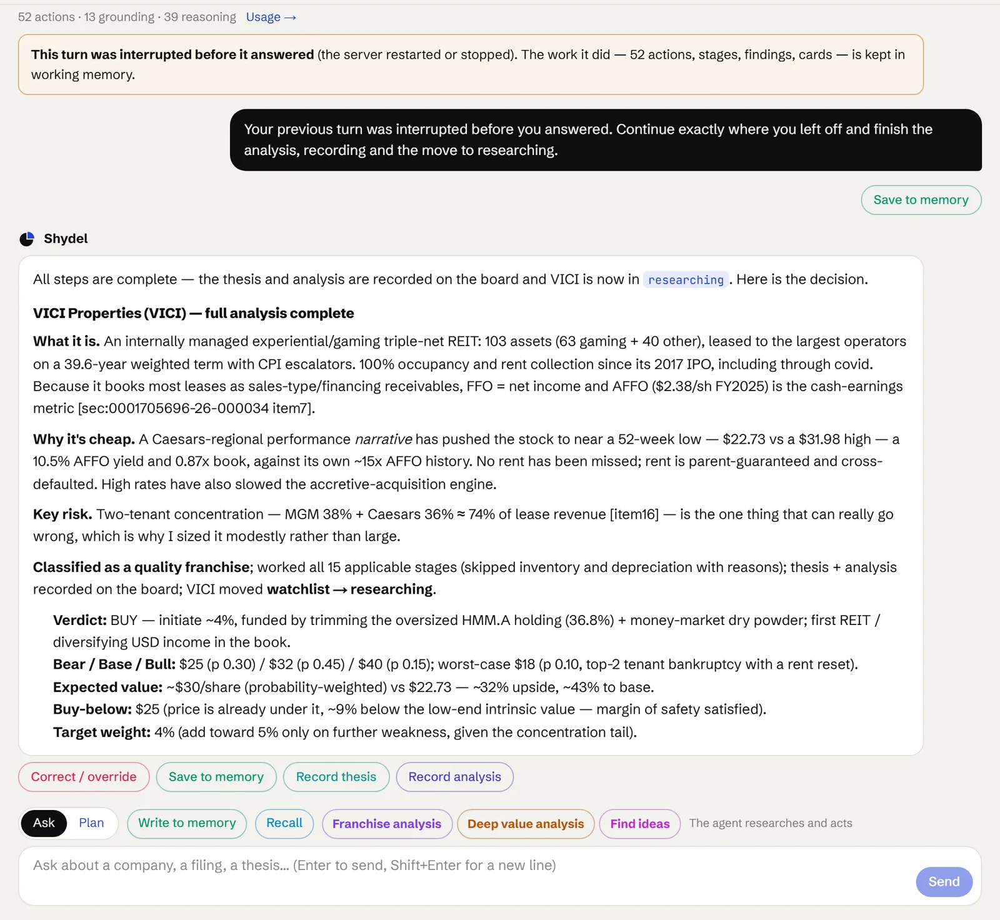
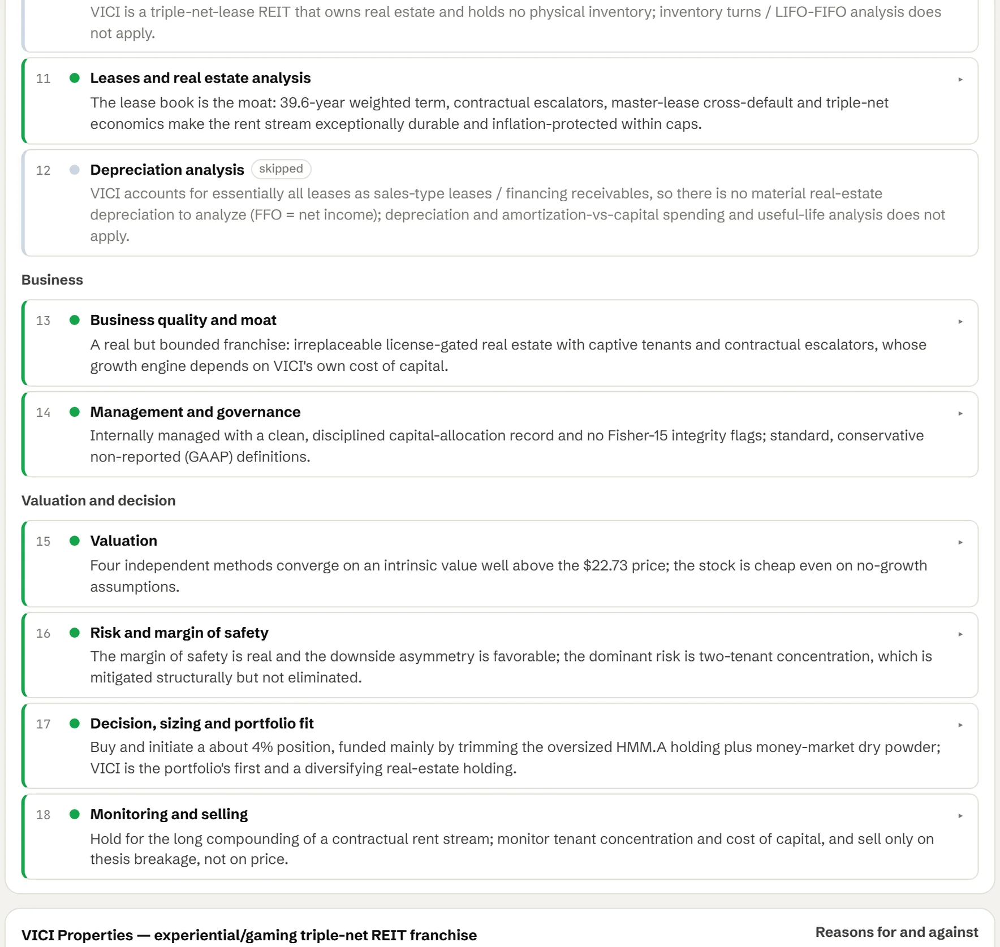
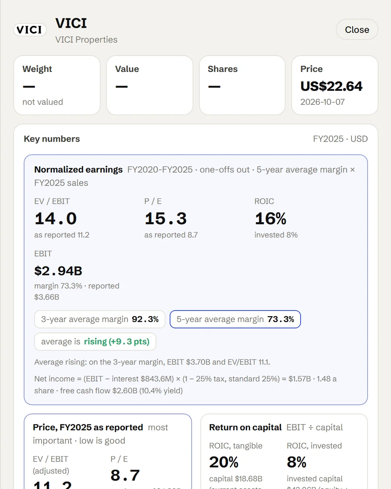

Gets better with your feedback.
When your investment committee overrules a view or an analyst adjusts an assumption, the agent learns from it and moves closer to your house view.
REITs and property companies get their own lane on the board and their own rules. The agent reads leases, escalators and tenant concentration in stage eleven, measures return on capital on the property, and scores each asset against the mix you already hold.
A REIT is routed to the real estate lane the moment it is added, and the rules for that lane apply from the first stage. Investment property is counted in the capital base, so return on capital is measured on the buildings. FFO and AFFO, not net income, are the cash earnings. Stage eleven reads the leases: terms, escalators and their caps, expiries, tenant concentration, and property values against carrying value.
The scorecard weighs the same way as everywhere else: price first, return on capital second, then quality, growth, balance sheet and management. Below: an analysis of VICI Properties, as the agent recorded it. Click any stage for its finding.
Run a full principled analysis of VICI Properties (VICI) for the portfolio: classify the company, work every analysis stage with cited findings, write thesis, valuation and scorecard cards, ground the decision in current portfolio weights, and record the thesis and analysis on the board.
The same eighteen stages, read for a REIT. The balance sheet counts the property, the cash flow stage reads AFFO, and stage eleven is the lease schedule.
Screens on AFFO yield, price to book and implied cap rate. A REIT is routed to the real estate lane automatically.
The 10-K, the supplemental and the lease schedule; the company classified. Most net-lease REITs book leases as financing receivables, so FFO equals net income.
Investment property at cost and at value. It is counted in the capital base, so return on capital is measured on the buildings.
FFO and AFFO: cash earnings after the capital spending needed to keep buildings leased; dividend coverage.
Rental revenue, net operating income and operating margin, with one-off gains on sales removed.
Secured against unsecured, fixed against floating, the maturity ladder, net debt to EBITDA.
Development commitments, ground leases and guarantees.
Tenant receivables, straight-line rent and the provision against them; rent collection history.
Property type, city and tenant mix; occupancy and rent by segment.
Skipped at a REIT, with the reason kept.
Lease terms, escalators and caps, expiries, tenant concentration, and property values against carrying value.
Book depreciation against real wear, and why FFO adds it back.
Irreplaceable locations, long leases, tenant credit and the licences that keep competitors out.
Internal or external management, acquisitions at or above cap rates, dilution, and the dividend record.
Forward-AFFO multiple, dividend discount, zero-growth earnings power value and NAV at a range of cap rates.
Tenant default, rate risk, escalator caps against inflation, and the chance of a permanent loss.
Weight, buy-below and trim-above prices, and what the asset does to the mix by city, type and tenant.
Occupancy, rent collection, leverage and dividend coverage, re-checked each quarter.
Real estate works from the firm-wide rules and the property skills: leases treated as debt, reproduction cost, unit build-out, AFFO. Your own underwriting standards for REITs and property companies sit in the real estate scope.
Each REIT analysis adds episodes, and repeated corrections become rule candidates for the real estate scope. Nothing becomes a rule until you approve it with a why.
How memory works →REITs and property companies get their own lane on the board. Each one goes through the same ordered analysis, with a stage for leases and real estate built in.

For a REIT the agent's answer talks the way a property investor does: what the buildings and the leases are, AFFO as the cash earnings, why the market is pricing it where it is, the tenant risk, and the verdict with its scenarios.

Stage eleven is the lease schedule: weighted term, escalators and their caps, cross-default, occupancy. Stages that do not apply to a REIT, like inventory, are skipped with the reason kept.

Open the card for EV/EBIT and P/E, return on capital measured with the property in the capital base, and the trend in sales, operating income and free cash flow.
When your investment committee overrules a view or an analyst adjusts an assumption, the agent learns from it and moves closer to your house view.
Each figure links back to the lease clause, cost report or statement it came from, so your team can check the work in seconds.
Rent rolls, cost reports and market data are re-checked as they arrive, so changes in a property's outlook surface early.